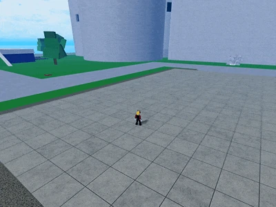
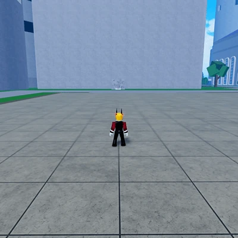

Moves
- Z - Missile Fist
- x - Air Strike
- C - Rocket Crash
- F - Blast Off
The user fires a small rocket from their hand, dealing damage and knockback on the contacted opponent.

The user raises their arm and shoots five rockets upwards, before creating targets at their cursor.
The previously fired rockets then drop onto the targets, dealing decent damage.

The user jumps to the air at a rapid rate and crashes to the ground where the cursor is pointing, dealing good AoE damage to any contacted enemies. This move is similar to T-Rex's F move (transformed) but faster.
The user does a backflip towards the sky and flies at a slow pace with an explosive trail. This move is similar to Flame's 'Rocket Flight' ability.
